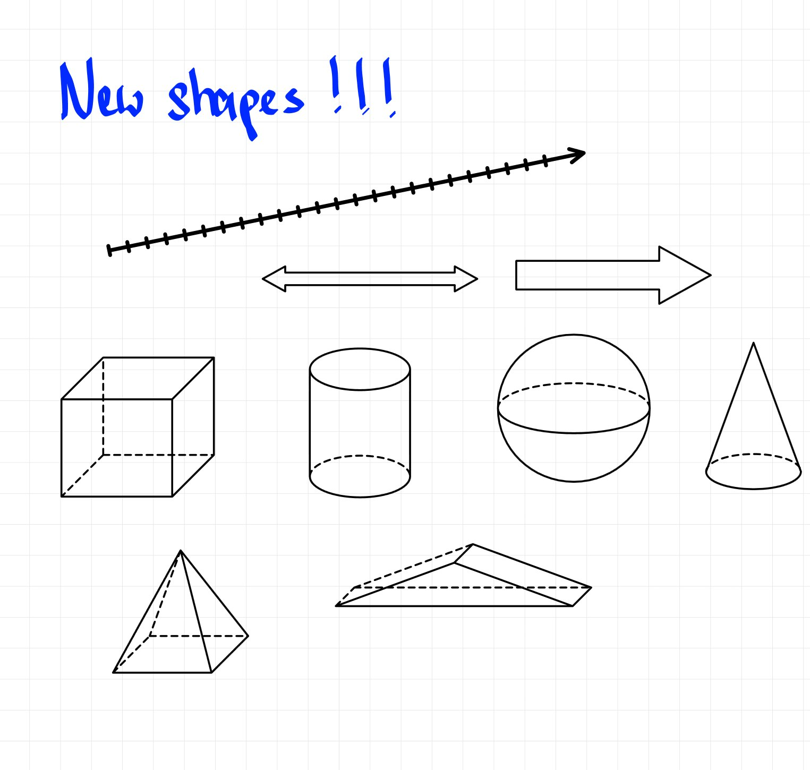
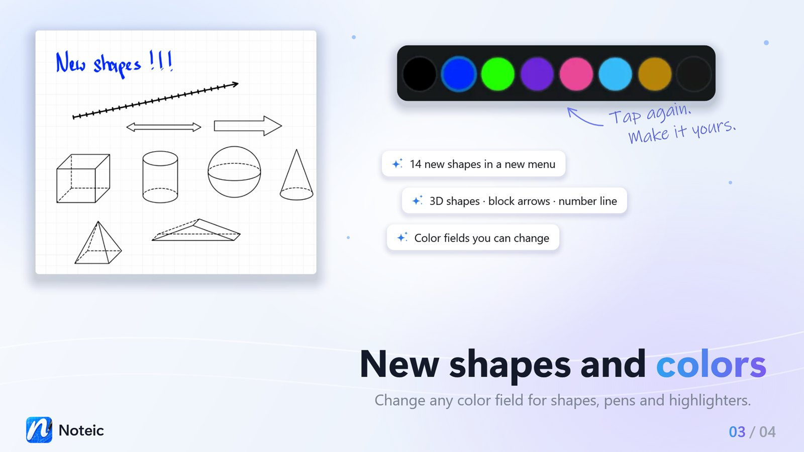

Shapes
55 shapes, from lines and arrows to callouts and 3D shapes, in a menu with tabs. Connectors stay attached to your shapes. Or sketch by hand and let Noteic recognize the shape.

Draw a shape#
- Tap Shapes in the toolbar. The shapes menu opens.
- Choose a tab and tap a shape. On the right, pick a line width, a line style and a color.
- Drag on the page from one corner to the other.
Hold Shift while you drag: lines and arrows snap to 45°, a rectangle becomes a square, an ellipse a circle, and every other shape gets equal width and height.
The shapes menu#
Since Noteic 1.7, the shapes are sorted into seven tabs:
| Recent | The shapes and connectors you used last, newest first, up to 18. Before you have used any, it shows a starter set. |
|---|---|
| Lines | Lines, arrows, brackets and the number line |
| Basics | Shapes, polygons, star, heart and burst |
| Arrows | Block arrows |
| Callouts | Speech bubbles and frames |
| 3D | Solids |
| Connectors | Lines that stay attached to shapes. See Connectors. |
- Every shape is in exactly one tab, and also in Recent once you have used it.
- The menu opens on the tab you used last.
- Recent gets its new order the next time you open the menu, so no shape jumps away under your pen.
- Above the tabs are the four drawing modes. On the right are Line and Color, see Line, fill and color.
All shapes#
- Lines (18): line, arrow, double arrow, curved arrow and curved double arrow, each arrow also with solid heads; angle and axes; curly, round and square brackets, as one bracket or as a pair around the area you drag; and the number line.
- Basics (17): rectangle, rounded rectangle, capsule, ellipse, triangle, rounded triangle, right triangle, diamond, parallelogram, isosceles trapezoid, pentagon, hexagon, heptagon, octagon, star, heart and burst.
- Arrows (7): a block arrow that points left or right as you drag, block double arrow, quad arrow, bent arrow, U-turn arrow, circular arrow and notched arrow.
- Callouts (3): square and rounded speech bubble, and a wavy frame.
- 3D (10): cube, cylinder, sphere, cone, pyramid, prism, tetrahedron, hexagonal prism, frustum and hemisphere, with the hidden edges dashed.
Ten of them came with Noteic 1.7: the quad, bent, U-turn, circular and notched arrow, the burst, and the tetrahedron, hexagonal prism, frustum and hemisphere.
Connectors#
A connector is a line between two shapes that stays attached. When you move, scale or rotate one of the shapes, the connector follows.
- Tap Shapes and choose the Connectors tab.
- Pick a connector under Straight, Elbow or Curved. Each comes plain, with one arrowhead or with two.
- Drag from one shape to the other. Near a shape, its four side points appear as small circles, and the end of the connector snaps to the nearest one.
- Straight runs directly from end to end, Elbow runs at right angles, and Curved runs in a smooth curve.
- Connectors attach to closed shapes, such as rectangles, ellipses, block arrows, callouts and 3D shapes. They do not attach to the shapes of the Lines tab, to other connectors, or to handwriting, text boxes and images.
- An end that you let go on empty paper stays free. You can attach it later.
- Line width, line style and color come from the menu, as for every shape. A connector has no fill.
To change a connector later, select it with the lasso. It shows a dot at each end:
- Drag a dot onto another shape to attach the end there.
- Drag a dot onto empty paper to release the end.
- If you move a connector on its own, it lets go of its shapes. Move it together with a shape and it stays attached.
- Copy shapes together with their connector and the copy is connected too.
Number line#
The number line is in the Lines tab. Its ticks are 5 mm apart unless you choose your own spacing, from 2 to 50 mm in steps of 1 mm.
- Before you draw: pick the number line in the shapes menu. Next to Line, a small field with − and + appears. It sets the spacing of the ticks.
- Later: select the number line, tap Style in the selection bar and change Spacing with − and +.
- Every number line keeps its own spacing.
- The value shows in millimeters or inches, like your ruler.
Drawing modes#
The top row of the menu changes how you draw:
- Recognize: draw freely. When you lift the pen, a line, circle, ellipse, triangle, rectangle or polygon becomes a clean shape. Draw from one shape's outline to another's and you get a clean line or curve between them. This is a plain line that does not follow the shapes; for that, use a connector. If nothing is recognized, your stroke stays as ink.
- Polygon: tap corner by corner; a tap on the first corner closes it. Esc discards it.
- Grid (grid snapping): straight lines whose ends snap to the paper grid and to the corners of other shapes, at 0°, 45° or 90°.
- Spline: tap to set points, drag while setting a point to shape the curve. Tap the first point to close it, or press Esc to finish.
Tap any shape in a tab to go back to plain dragging.
A quick shape with your pen#
For a quick rectangle, circle or straight line, you don't need the shapes tool. Turn on Hold for shape in the menu of your pen or highlighter, draw the shape and hold the pen still at the end. The stroke becomes a clean shape, drawn as ink in that pen. See Pens › Hold for shape.
Shapes from the shapes menu can do more: fill, line styles, connectors and reshaping later.
Line, fill and color#
- Line: width from 0.1 to 2 mm, or one tap on Thin lines (0.25 mm), Normal lines (0.5 mm) or Bold lines (1 mm).
- Seven line styles: Solid, Dashed, Long dashes, Dotted, Dash-dot, Wavy and Zigzag.
- Fill: fills closed shapes. Switch between Outline and Fill to give each its own color, and set the fill opacity from 5% to 100%.
- 20 color fields you can change: tap a field to use it, tap it again to change it. One more field at the end adds your own color.
- The palette button opens a custom color picker with a Hex box.
Change a shape later#
Select it with the lasso. Drag the frame to move, scale or rotate it, drag its point dots to reshape it, and use Style in the selection bar to change width, line style, fill and color. See Style and color.
- Yellow point: a selected quad, bent, U-turn, circular or notched arrow and the burst show a yellow point. Drag it to change the shaft width, the band width, the notch depth or the depth of the points.
- 3D shapes: a selected 3D shape shows a round handle in its middle. Drag it down to make the shape deeper, as if you looked at it more from above, or up to make it flatter.
- Both handles show when exactly one shape is selected and it is large enough on screen. Zoom in if you don't see them.
- Connectors follow when you move, scale or rotate their shapes. See Connectors.
